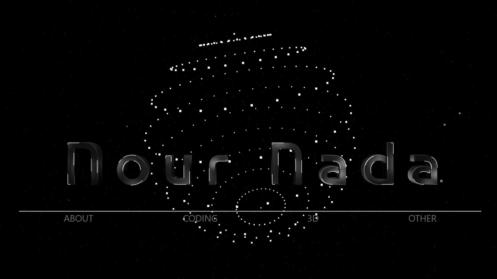
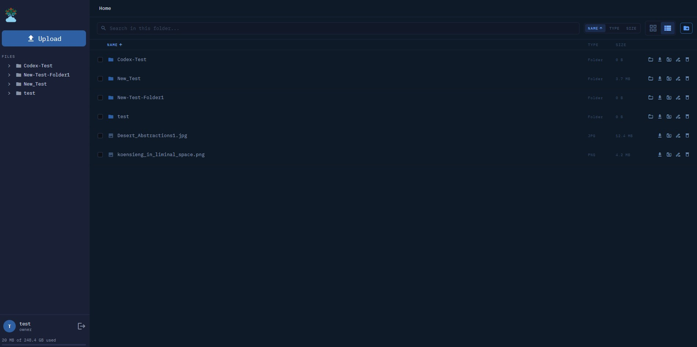
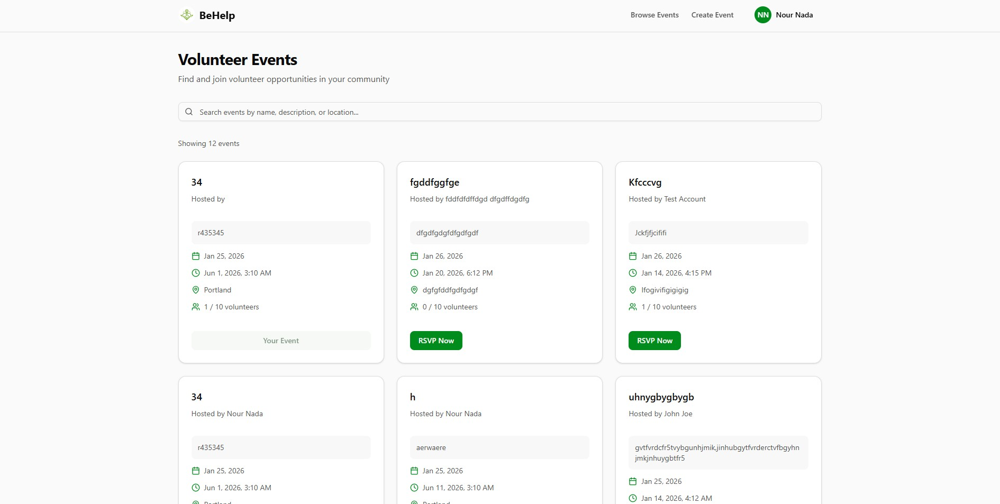
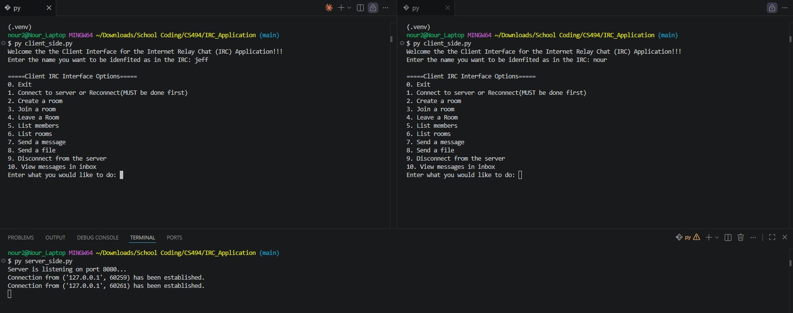
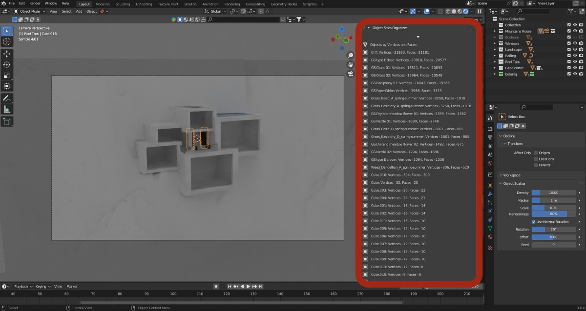

This site is designed for landscape.
Rotate your device or widen your browser window.

Built from scratch — no frameworks. The site you're on now, with an interactive 3D background and a custom-built carousel — proof of how far the fundamentals can go. HTMLCSSJavaScriptThree.js Hosted on GitHub.

Systems, security, and full-stack in one build. A self-hosted alternative to Dropbox, engineered across three tiers with JWT auth and privilege-escalation defense. C++Node.jsReactDockerSQLite View it HERE

A full-stack platform, built in 24 hours. A volunteer-matching app where I owned the backend end to end and architected it to scale to thousands of users. Node.jsExpressReactTypeScriptSupabase See it HERE

Real-time chat, built from the socket up. A messaging protocol I designed from scratch over raw TCP sockets — with private messaging, file transfer, and end-to-end encryption. PythonTCP SocketsCustom Protocol View it HERE

A shipped Blender add-on, written in Python. Ranks every object in a scene by vertex and face count so artists can pinpoint what's slowing their renders. 5-star rated on Blender's largest marketplace. PythonBlender API View it HERE
Built from scratch — no frameworks. The site you're on now, with an interactive 3D background and a custom-built carousel — proof of how far the fundamentals can go. HTMLCSSJavaScriptThree.js Hosted on GitHub.
Systems, security, and full-stack in one build. A self-hosted alternative to Dropbox, engineered across three tiers with JWT auth and privilege-escalation defense. C++Node.jsReactDockerSQLite View it HERE
A full-stack platform, built in 24 hours. A volunteer-matching app where I owned the backend end to end and architected it to scale to thousands of users. Node.jsExpressReactTypeScriptSupabase See it HERE